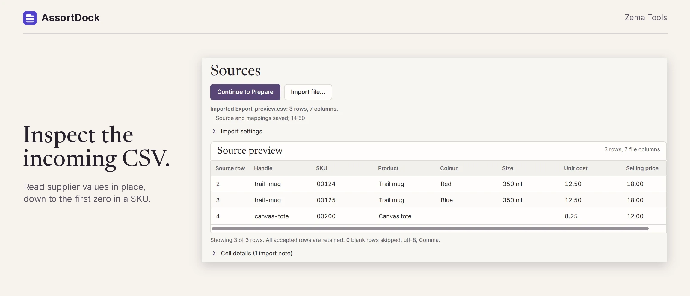
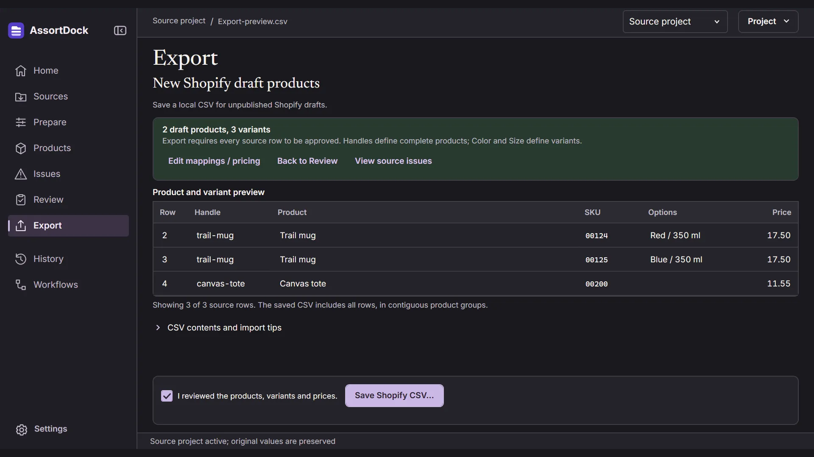
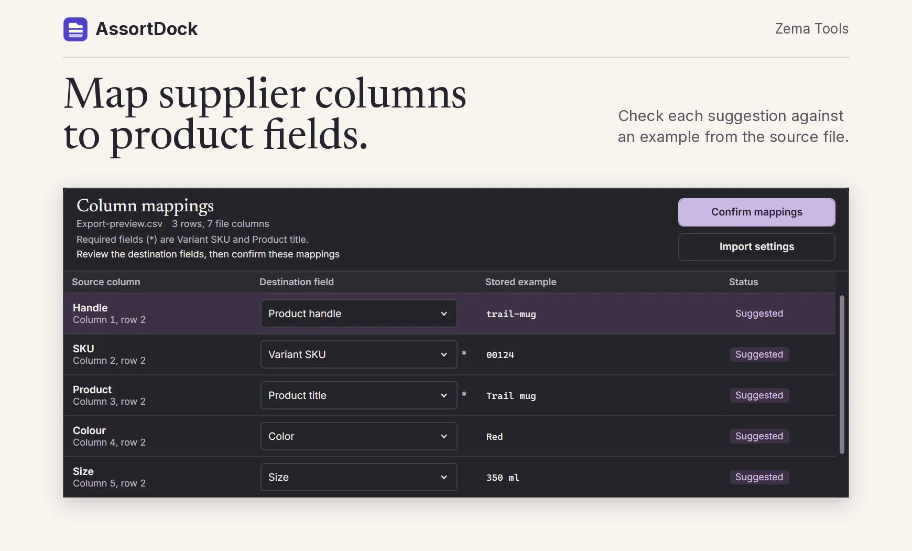
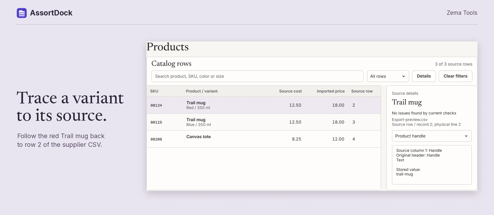
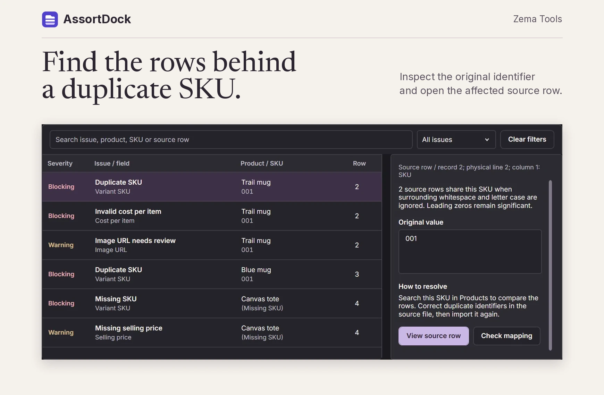
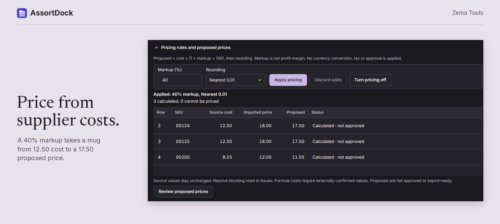
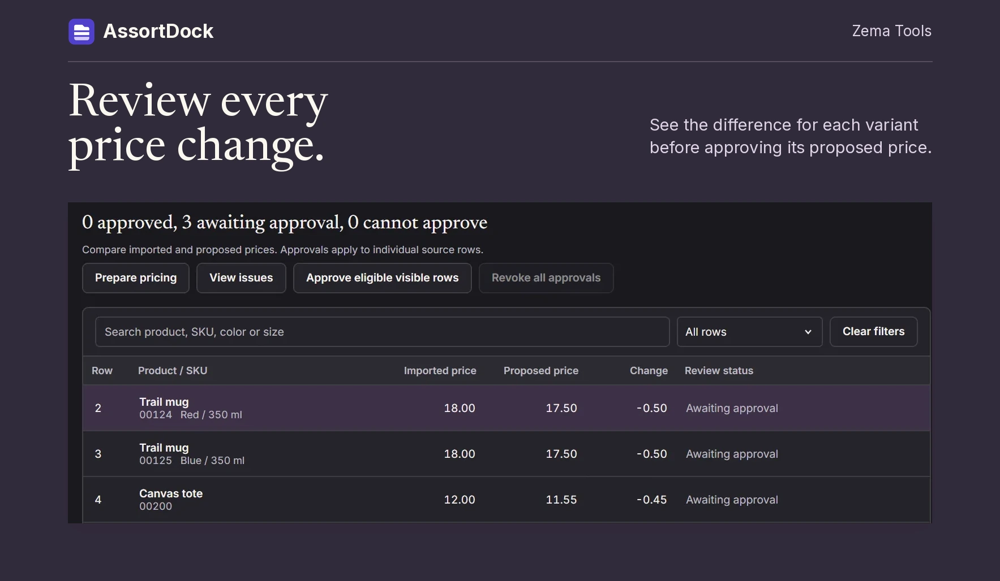
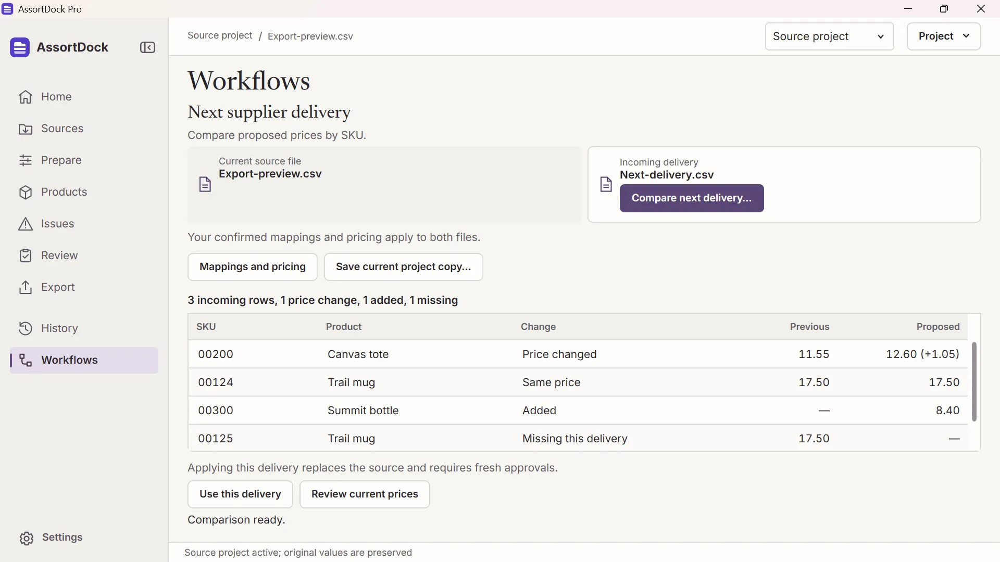

Inspect the source
Import a CSV, TSV or XLSX and check the source rows before mapping.
Map supplier columns, catch catalog issues, and review prices before saving a CSV for unpublished Shopify products.

Inside AssortDock
Follow a supplier file through the Windows app. Open any screenshot for a closer look.

Import a CSV, TSV or XLSX and check the source rows before mapping.

Confirm which supplier columns hold the SKU, product title, options and costs.

Select a SKU to see its supplier row and original stored value.

Inspect the affected rows and see which issue needs attention.

Apply a markup and rounding rule to supplier costs. The original values stay available.

Compare the imported and proposed price before approving a source row for export.
Repeat deliveries
A supplier sends a new file. The tote price has changed, a bottle has arrived, and one mug is missing. Review those differences before you choose a new source.

Free & Pro
Both editions include column mapping, issue checks, pricing, approvals and local Shopify draft CSV export.
$0
$59 USD · one time
For the Windows app. Checkout shows applicable taxes.
Approve every source row, inspect the product and variant preview, then save the CSV to your PC. You choose when to import it into Shopify.
Copy your customer license key from checkout or your purchase email. In AssortDock, open Settings → License, paste the key, and choose Activate. Find your license.
Download the example supplier file and select Import file in Sources. Its three rows contain two mug variants and a tote, with SKUs, costs and selling prices.